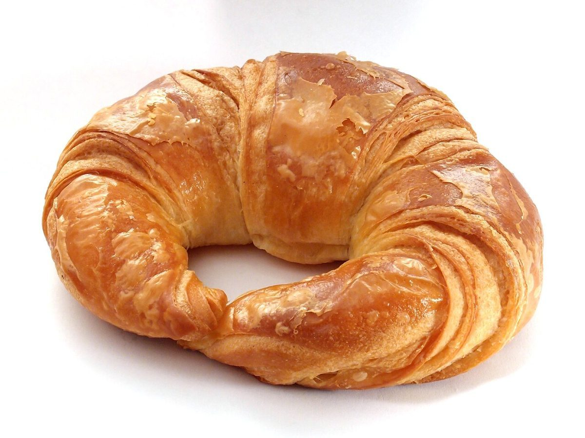
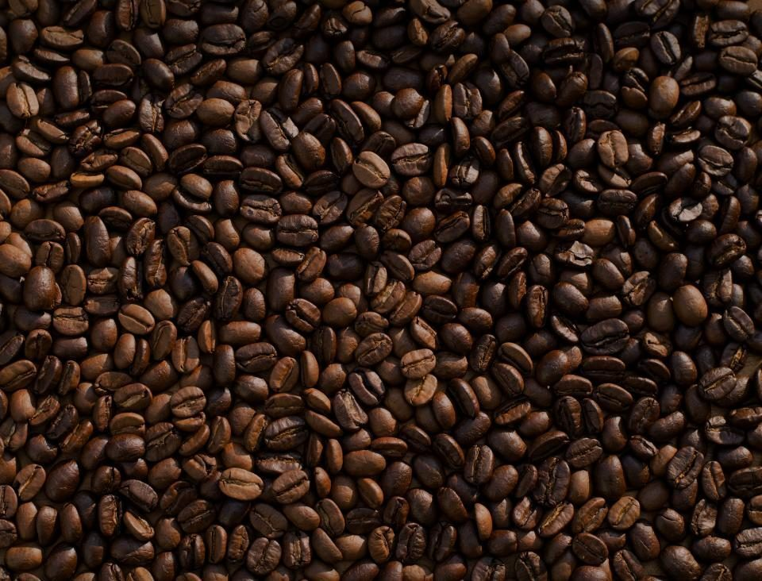

制作側の連想
犬小屋の部位を、配置図にしてみる
このサイトは、庭先に置く犬小屋を正面から見た図にしたつもりで作りました。六つの部位に番号をふり、上の図と並べています。制作側の連想で、お店の理念・由来とは無関係です。実際の製品の寸法や仕様を示すものでもありません。
凡例
六つの部位
- 1切妻屋根雨を流すために、山形に組んだ屋根。
- 2出入口正面にあけた、アーチ形の入り口。
- 3壁板縦に張り並べて、四方の壁をつくる板。
- 4床板地面から離して張る、足もとの板。
- 5束(つか)床を持ち上げて支える、短い脚。
- 6庇(ひさし)出入口の上に差し出した、小さな屋根。
写真帯(イメージ)
カップとテーブルの写真


ギャラリー(イメージ)
パンとコーヒー豆の写真





写真はイメージです。お店のものではなく、お店で提供している商品や店内を示すものでもありません。
ご案内
お店のこと(確認できたものだけ)
| 所在地 | 〒520-0047 滋賀県大津市浜大津５丁目１−７ |
|---|---|
| 電話 | 準備中 |
| 営業時間 | 準備中 |
| 定休日 | 準備中 |
| ご予約 | 準備中 |
| 駐車場 | 準備中 |
| SNS | Instagram @birdcafe_ootsu |